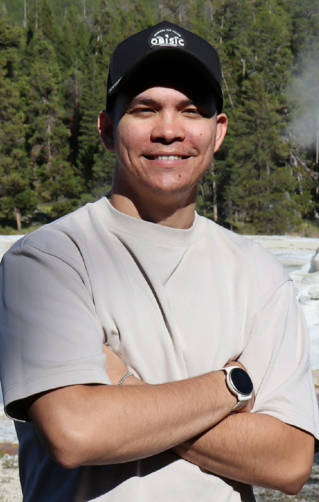
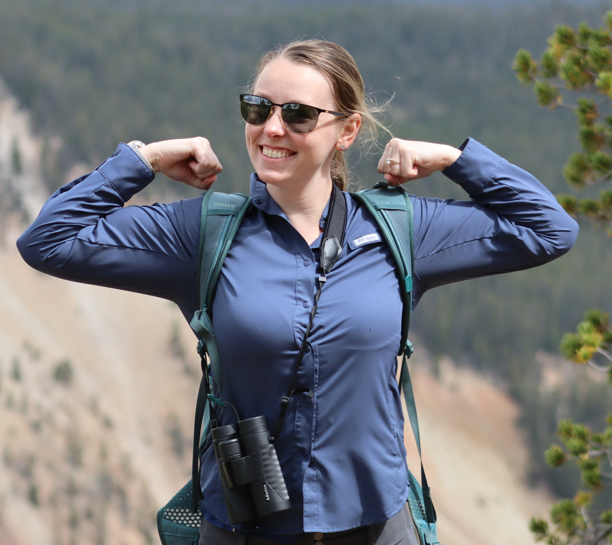

Chanin and Kaitlyn met in 2023 when Chanin left his military service with the Air Force and moved to Oregon to be near his childhood friend Harley. Harley's wife Sasha worked at the Vetinerary clinic where Kaitlyn was a practicing doctor. This connection through mutual friends led to a strong bond and eventually a romantic relationship. Kaitlyn and Chanin now spend their time together traveling competing in local trivia, country dancing, visiting National Parks, birdwatching, and enjoying nature.

Chanin is an Air Force Special Operations combat veteran. He is currently pursuing a software engineering technology degree at the Oregon Institue of Technology. Chanin loves math, puzzles, music, and Jiu-Jitsu. He enjoys playing his guitar and singing along to his favorite songs. Chanin's uplifting spirit and dedication to his passions make him a perfect match and supportive partner for Kaitlyn.

Kaitlyn is a dedicated veterinarian who has a deep love for animals and nature. She enjoys birdwatching, hiking, and spending time in the great outdoors. Kaitlyn enjoys making beautiful works of art, and has created many masterpieces that adorn the walls of their home. Kaitlyn's compassionate nature and adventurous spirit have made her the perfect partner for Chanin.